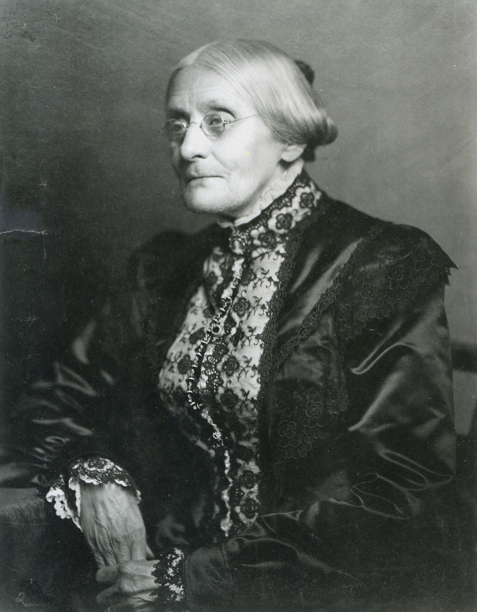

Tribute Project
Designed a web page on the life of Suffragette Susan B. Anthony. Based on the FreeCodeCamp Tribute Project requirements.
Survey Project
Designed a Survey around favorite snack foods
and snacking habits.
Based on the FreeCodeCamp Survey Project requirements.